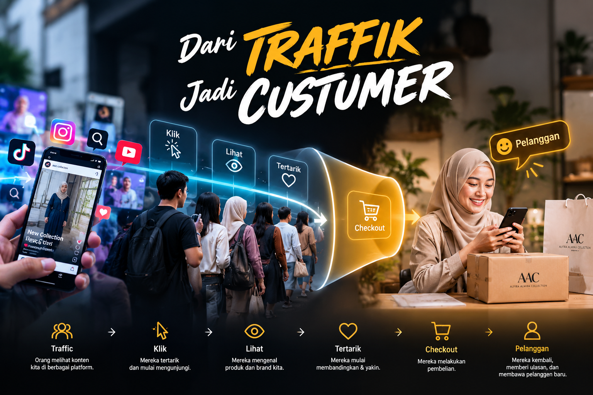

Mendatangkan orang ke website saja belum cukup. Karena orang yang datang belum tentu langsung membeli. Misalnya seseorang melihat produk AAC dari Facebook atau TikTok. Dia tertarik. Kemudian dia ingin tahu lebih banyak tentang produknya. Mungkin dia melihat beberapa produk lain, melihat harga, melihat brand yang tersedia, lalu baru memutuskan apakah ingin membeli atau tidak.
Jadi,kita perlu membuat prosesnya semudah mungkin.
Orang melihat produk → tertarik → mencari informasi → membeli.
Dan setelah membeli, hubungan dengan customer jangan berhenti begitu saja.
Kalau mereka puas, kita ingin mereka bisa kembali lagi ketika membutuhkan produk berikutnya.
Di sinilah website bisa mempunyai peran. Website bukan hanya tempat untuk menampilkan produk. Tetapi bisa menjadi tempat di mana customer:
Menemukan produkSementara medsos, iklan, dan WhatsApp tetap bisa menjalankan perannya masing-masing untuk mendatangkan dan berkomunikasi dengan customer.
Jadi semuanya tidak bisa berdiri sendiri. Traffic datang dari berbagai tempat, kemudian diarahkan ke satu tempat yang kita miliki sendiri.
Dan setelah customer membeli, kita tetap bisa menjaga hubungan dengan mereka.
Datangkan orangnya.
Berikan tempat yang nyaman untuk melihat dan membeli.
Kemudian jaga supaya mereka mau kembali lagi.
Di situlah peluang digital AAC mulai bisa dibangun.